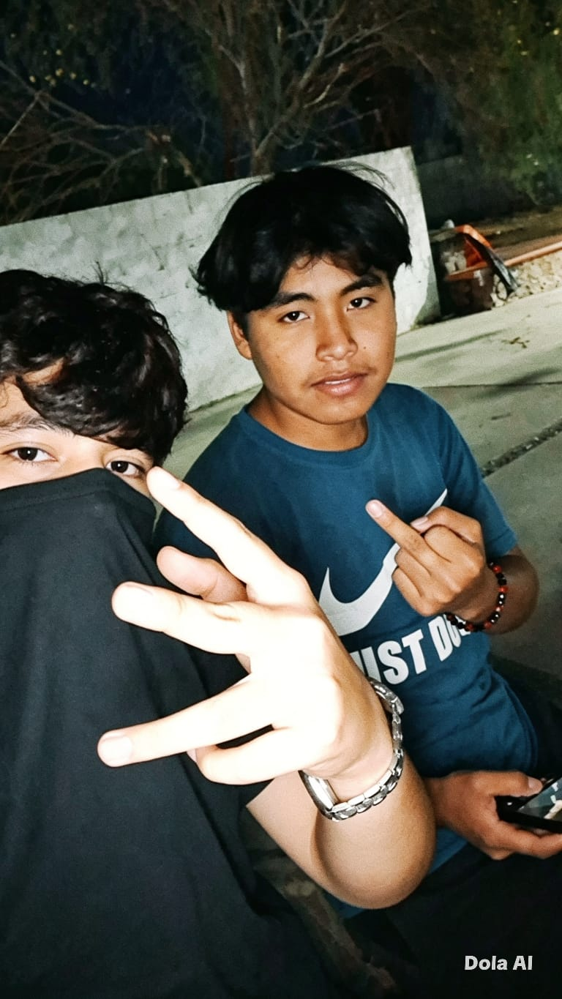
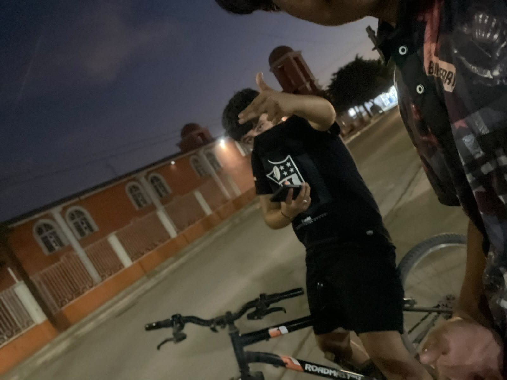
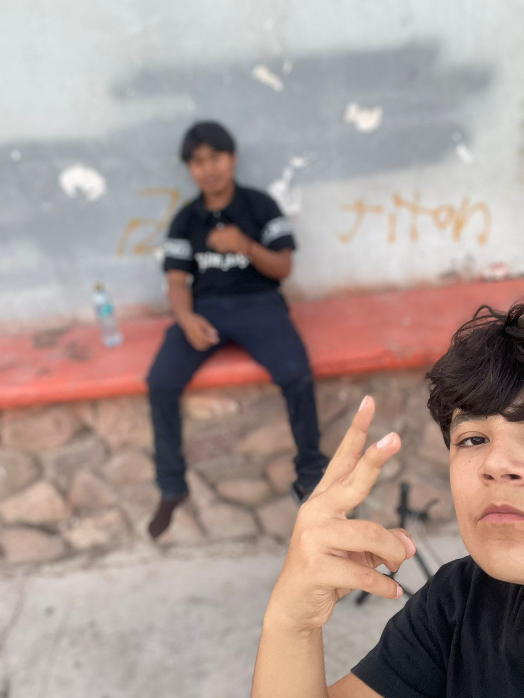

Manuel, eres un gran amigo y uno de los más reales. Te quiero mucho bro, eres como un hermano para mí.
Te tengo un cariño enorme por ser lo que eres. Eres uno de los únicos que me entiende. Nos reímos por todas las mamadas que decimos.
Te quiero mucho we. Te tengo un cariño enorme por ser lo que eres. Te quiero bro

Eres un gran amigo, te considero un hermano para mí. Yo sé que cada quien tiene sus diferentes gustos y pues yo sé que te gusta el yupi pero cada quien bro

No suelo decir esto pero yo te quiero muchísimo bro. Me haces reír con las mamadas que dices o a veces me hacer enojar pero así son las cosas. Solo amigos y eso es lo que cuenta.

Yo soy tu amigo y voy a estar en las buenas y en las malas contigo. Me gusta tu manera de ser, siempre eres seguro de ti mismo y sincero.

Las fotos siempre quedan de recuerdo, yo te tengo en mi corazón por ser un gran amigo leal y sincero.

Eres el único con el que me gusta salir a platicar y desahogarme. No siempre dices que no cuando te digo que salgamos tu vas y eso se aprecia por no dejar solo a un amigo. Te quiero bro
No tenemos muchas fotos juntos pero los recuerdos siempre quedan marcados. Eres el único amigo leal que tengo, se aprecia mucho que hables conmigo de todo. Tu me estás enseñando a ser hombre y eso se aprecia un montón porque desde hace unos años me empezaron a jugar los hombres y pues tú me enseñaste a ser hombre y que me gusten las mujeres.
Muchas gracias por eso bro, te quiero mucho. Eres mi mejor amigo we.
Gracias por ser lo que eres, te admiro por ser leal. Nuevamente muchas gracias por quedarte conmigo y considerarme un amigo we. 🫂